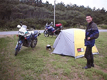
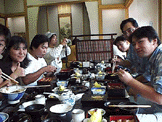
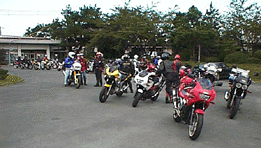
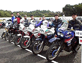
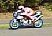
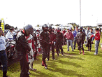
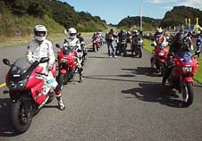
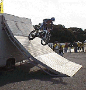

97/09/26 21:45 小雨も止んだので厚木を出発。ルートは２４６で沼津まで行きそこから１号線で浜松まで行き、浜松の中田島砂丘でテントを張ることとする。中田島砂丘に夜行ったのは初めてであったが、はっきり言ってがらが悪かった。駐車場には、怪しい車が沢山止まっていてステレオをガンガンかけていた。ココはいかんと松林の中を暫く走るが何処まで行っても林道のような細い道と松林しか無くとてもテントを快適に張れるような所ではなかった。結局、さっきの駐車場の先、車止めを越えて行くことにする。カップルを２組通り過ぎた広々とした芝生でテントを張り、寝ることとする。無視も少なく快適であった。

97/09/27 朝、散歩をする人の声を聞きながらうとうとしていたらバイクの音で起こされた。テントから出てみると坂本君がやってきた。何でも付いたのが4:30位だったのでもったいないと思って健康ランドハッピーの駐車場でうとうとしていたらしい。坂本君はバイクのフロントフェンダーをアップフェンダーに改造していた。坂本君の後ろについてハッピーまで行く。ハッピイの駐車場には松下さんがいて、駐車場には、前川さん、吉田さん、齊藤さんと大久保さんのテネレ、河野さんとなんとキャンプと行っていた那須さんのTDMがあった。一通りブリーフティング（自己紹介）の後、天竜スーパー林道へ向かう。テネレx7 + TDMx2、テネレがこんなに集まったのは初めてである。途中の国道で鶴見さんの遊撃に逢い、さらに集団はメンバーを増やしますます意気揚々として、スーパー林道を目指す。しかし、スーパー林道の入り口では、那須さんがどうしようかぐずりだす。ダメと思ったら引き返そうとダマシダマシつれていく。暫くは、気持ちのいい山間部の道。みんな同じパフォーマンスなので一糸乱れず竜のように連なって天竜スーパー林道をかけ登っていく。途中の未舗装路で那須さんが引き返す。しかし、実際に行ってみると堅くしまったダートで、しかも距離も短かった。ダート、舗装の繰り返し。次第にダートの区間が長くなってきて、とうとう峠の駐車場に到着する。しばしの急速の後、水窪手前の二叉路にて雨がぽつぽつ降ってきたため、惜しみながらも天竜スーパー林道を後にする。河野さんは、林道が思いの外TDMで走りやすかったとのことで感心しきり。是非また林道を攻めると意気揚々としていた。テネレ軍団も負け無いぞと盛り上がる。那須さんが待つ、スーパー林道入り口まで向かい合流し、一路袋井インターを目指す。

袋井インターにて、あっこさん、宮内さんらと合流し、松下さんの先導でうなぎ屋を目指す。ウナギは２段重(\2,600-)を頼んだが、大泉君は値段で迷っていたため鰻丼（\1,200-)２個の方が安いとけしかけたら、１つは大盛り（+\50)１つは普通盛りで本当に頼みやがった。しかも、２つとも大盛りにすれば良かったと反省しきりであっこちゃんの食べ残しにも箸を付ける。夜は、みんなで大宴会を開く。考えてみれがこうしてお座敷で大人数で宴会を開いたのは初めてではないだろうか。（一部の支部を除く）



次は本日のメインイベント走行会の準備が始まる。まずインストラクターとXS01難波さんによるテストコースの予備走行が始まる。さすがに平レーシングのTRXは早く、ダントツのスピードで走る。そのエンジンはなんと160PSも有るとのことであった。
走行の説明会が始まり、約１名を除きみな真剣な表情で聞きいっている。
いよいよスタートラインに整列する。高山さん勝手が分からずインストラクターのご指導に逢い、グループの先頭のはずが高橋さんの次に甘んじる。大泉君と前田さんは同じグループにて１番手、２番手に並ぶが後にバトルを展開することとなった。前田さんの走り。高山さんの走り。安部さんの走り。あっこちゃんの走り。難波さんも自分のTRXにて最後尾より参加しており、ジャックナイフを魅せてくれた。

その間、イベント広場ではトライアルが始まる。こんな所、あんな所をすいすい簡単そうに走り、超格好良い。ジャックナイフも披露していたが、難波さんのジャックナイフはブレーキングをしながら、トライアルのジャックナイフは制止するかのような技。どっちも難しいだろうけれど別の技なのかも知れない。あんなのを見せつけられるとついついやってみたくなってしまう。しかし、スタンディング大会に挑戦してみると２秒と持たずとっても難しい。